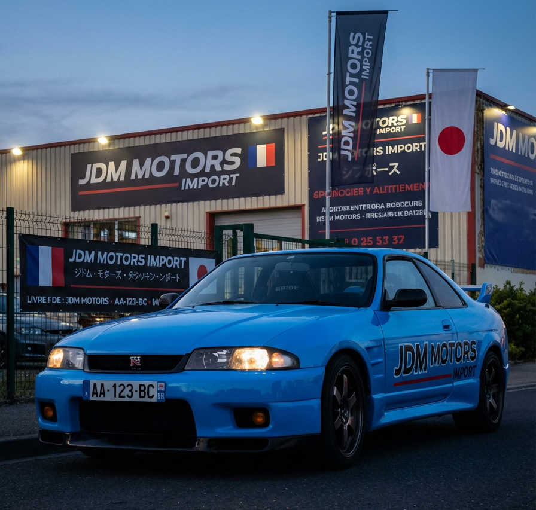

À PROPOS
L’univers de JDM MOTORS
JDM MOTORS est un site dédié aux passionnés de voitures japonaises sportives et légendaires. Notre objectif est de mettre en avant des modèles emblématiques tels que la GT-R, la Supra ou encore la RX-7.
À PROPOS
JDM MOTORS est un site dédié aux passionnés de voitures japonaises sportives et légendaires. Notre objectif est de mettre en avant des modèles emblématiques tels que la GT-R, la Supra ou encore la RX-7.
Notre histoire
Depuis plusieurs années, l’univers JDM attire les amateurs de performance, de design et de mécanique de précision. JDM MOTORS s’inscrit dans cette passion en proposant une vitrine dédiée aux véhicules japonais les plus iconiques.
À travers ce site, nous souhaitons présenter des voitures d’exception, partager notre intérêt pour la culture automobile japonaise et offrir une expérience claire et agréable aux visiteurs.

Nos valeurs
Chaque modèle présenté reflète l’amour des véhicules japonais et de leur histoire.
Nous mettons en avant des voitures reconnues pour leurs performances, leur fiabilité et leur caractère unique.
JDM MOTORS valorise l’esprit d’origine des véhicules japonais iconiques.
Ce site a été conçu pour présenter l’univers des voitures japonaises d’exception à travers une interface simple, moderne et accessible.